반찬(진열)쇼케이스
반찬쇼케이스 추천, 매장 폭과 판매 방식으로 고르는 기준
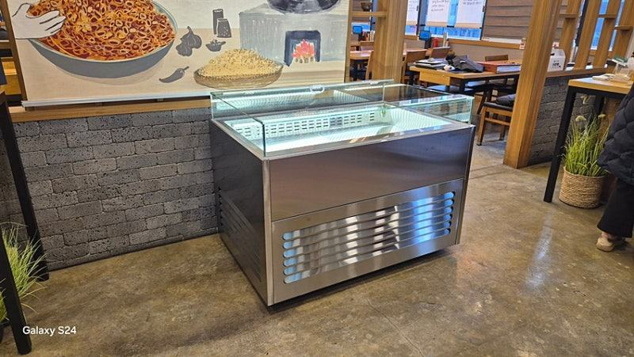
반찬쇼케이스는 손님이 직접 집어 가는 포장 반찬 위주라면 다단 오픈형이나 유리문형을, 직원이 덜어 파는 매장이라면 뒤에서 꺼내는 대면형을 먼저 보시는 게 맞습니다. 그다음 매장 폭에 맞는 길이와 용기 높이에 맞는 단 간격, 온도가 고르게 유지되는 냉각 방식을 차례로 정하시면 됩니다.
안녕하세요. 반찬가게와 델리 매장의 진열장을 맞춰 만드는 한성쇼케이스입니다.
반찬가게를 준비하시면서 "반찬쇼케이스 어떤 걸로 사야 해요? 하나만 추천해 주세요"라는 질문을 정말 많이 받습니다.
그런데 같은 반찬가게라도 손님이 직접 고르는 매장과 직원이 덜어 주는 매장은 필요한 쇼케이스가 전혀 다릅니다.
매장 폭에 안 맞는 제품을 들이면 손님 동선이 꼬이고, 용기 높이와 단 간격이 안 맞으면 진열량이 줄어듭니다.
매일 쓰는 설비라 처음 선택이 오래 영향을 미치죠.
그래서 오늘은 특정 모델 대신, 우리 매장에 맞는 반찬쇼케이스를 고르는 순서를 판매 방식과 매장 크기 기준으로 정리해 드리겠습니다.
1. 판매 방식이 형태를 정합니다
포장 용기에 담아 두고 손님이 직접 집어 가는 매장이라면 다단 오픈형이나 유리문이 달린 세로형이 잘 맞습니다.
눈높이에 반찬이 층층이 보여 고르기 쉽고, 진열 면적 대비 많은 양을 올릴 수 있습니다.
큰 통에 담아 두고 직원이 그램 단위로 덜어 파는 매장은 손님 쪽은 유리로 막고 직원 쪽에서 꺼내는 대면형이 위생과 동선 모두 유리합니다.
두 방식을 섞는 매장이라면 벽면은 다단형, 계산대 앞은 대면형으로 나누는 구성이 많습니다.
- 포장 반찬 위주: 다단 오픈형·유리문형
- 덜어 파는 반찬: 대면형
- 섞어 파는 매장: 벽면과 계산대 앞으로 분리
2. 매장 폭과 단 간격 맞추기
반찬쇼케이스는 길이가 조금만 넘쳐도 통로가 좁아지고, 모자라면 남는 틈이 지저분해 보입니다. 놓을 벽의 폭을 재고, 손님이 장바구니를 들고 지나갈 통로 폭을 먼저 확보한 뒤 길이를 정하세요.
단 간격도 중요합니다. 납작한 나물 용기와 높이가 있는 김치·장아찌 용기는 필요한 높이가 다릅니다.
주로 쓰는 용기를 정해 두고 그 높이에 맞춰 단을 잡으면 같은 크기의 쇼케이스에서도 진열량이 달라집니다.
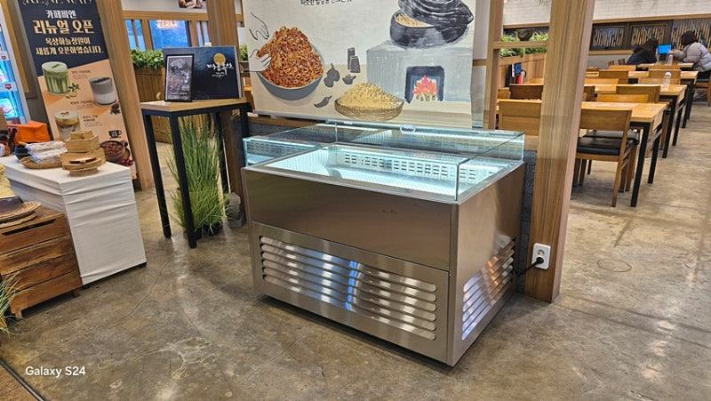
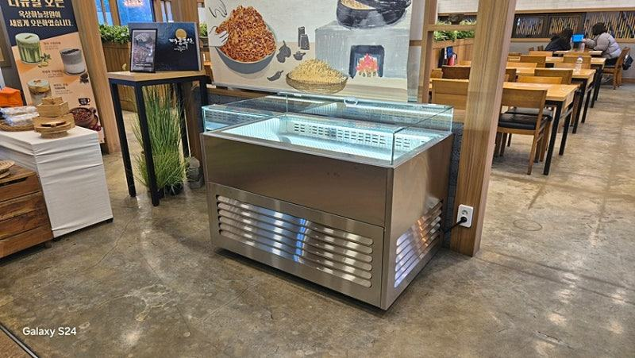
3. 냉각 방식은 매장 환경에 맞춰서
직냉식은 구조가 단순하고 수리가 쉬운 대신 성에가 자주 생기고 위치별 온도 차이가 큰 편입니다. 간냉식은 팬으로 냉기를 돌려 내부 전체 온도가 고르고 자동 제상으로 성에가 생기지 않는 대신 부품이 많습니다.
반찬은 칸마다 같은 상태로 유지돼야 하고 손님이 문을 자주 여는 진열 설비라 간냉식을 많이 택하십니다.
다만 뒤쪽 재고 보관용 냉장고처럼 문을 자주 열지 않는 설비는 직냉식도 충분한 경우가 있으니 용도별로 나눠 보세요.
4. 매일 쓰는 편의 옵션
온도 조절이 버튼식인지 다이얼식인지는 작아 보여도 매일 체감하는 차이입니다. 세밀하게 맞추려면 디지털 버튼식이 편하고, 외출 중에도 상태를 보려면 원격제어 옵션을 확인해 보세요.
반찬가게는 손님과 가까운 거리에서 대화가 오가는 곳이라 저소음 콤프 옵션도 고려할 만합니다. 외관 색상과 마감은 간판, 벽 타일 톤과 맞춰 고르면 매장이 한결 정돈돼 보입니다.
- 디지털 온도 조절 방식
- 원격제어 가능 여부
- 저소음 콤프 업그레이드
체크리스트
- 포장 판매인지 덜어 파는 판매인지
- 설치 벽 폭과 통로 폭
- 주력 반찬 용기 높이
- 진열용·보관용 냉각 방식 구분
- 온도 조절 방식과 원격제어
- 외관 색상·마감 선택 가능 여부
중고 반찬냉장고와 맞춤 반찬쇼케이스를 비교한 상담
중고 반찬냉장고를 먼저 알아보시던 사장님과 맞춤 제작을 나란히 놓고 비교해 본 상담입니다. 중고는 이전 매장 기준으로 크기가 고정돼 있고 유리 마감이나 문 구조도 바꿀 수 없어, 설치해 보기 전까지 동선 문제를 알기 어렵다는 점이 걸렸습니다.
맞춤 제작은 매장 폭에 맞춰 길이를 고르고 외관 색상을 세 가지 중에서 정할 수 있으며, 새 콤프에 저소음 업그레이드도 가능하다는 점을 비교해 드렸습니다.
공장 직배송으로 진행되고 구매 후 1년 무상 A/S가 적용되는 조건이었습니다.
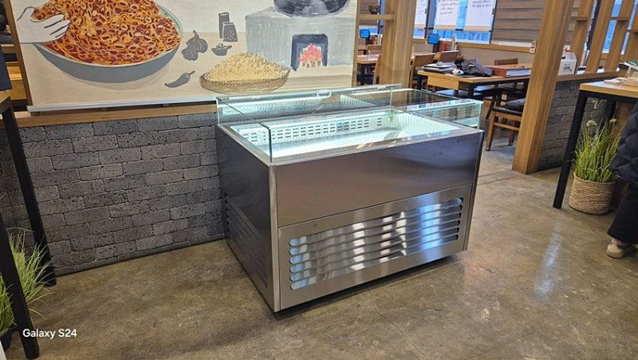
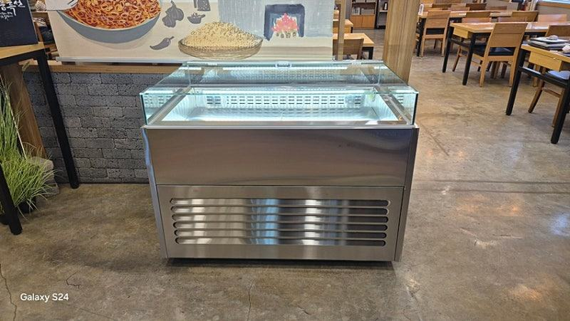
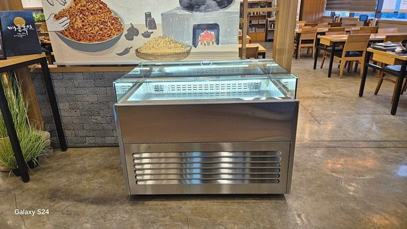
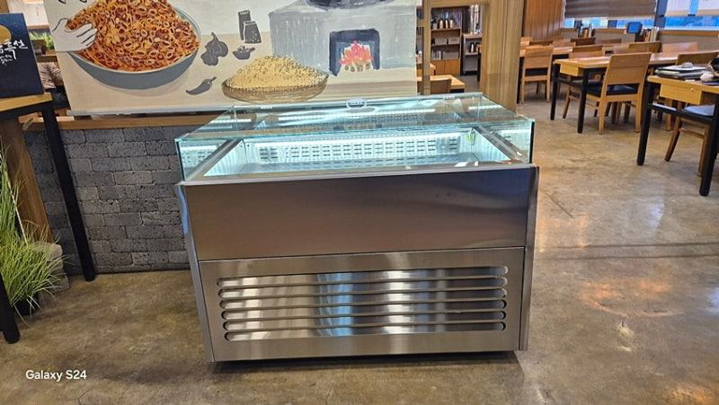
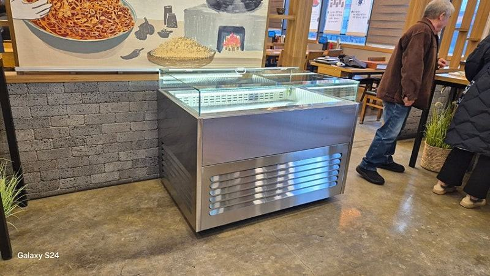
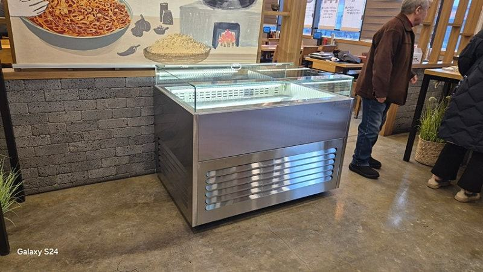
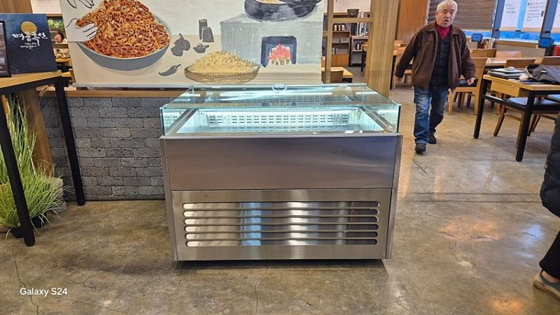
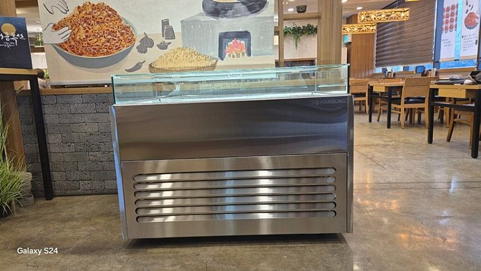


| 구분 | 중고 구매 | 맞춤제작 |
|---|---|---|
| 사이즈 | 기존 소유자 기준 고정 | 매장에 맞춰 900~1800 선택 |
| 컬러 및 마감 | 선택 불가 | 매장에 맞춰 3가지 선택 가능 |
| 콤프 상태 | 노후도 확인 어려움 | 신품, 저소음 업그레이드 가능 |
| AS 기간 | 대부분 보증 소진 | 구매 후 1년 무상 AS |
자주 묻는 질문
작은 반찬가게에도 맞춤 제작이 의미가 있나요?
작은 매장일수록 길이 차이가 동선에 크게 드러나서 오히려 효과가 큽니다. 벽 폭에 맞춰 길이를 정하고 용기 높이에 맞춰 단을 잡으면 같은 공간에서 진열량을 늘릴 수 있습니다.
오픈형과 유리문형 중 어느 쪽이 반찬에 더 나을까요?
손님이 많아 빠르게 집어 가는 매장은 오픈형이, 손님이 띄엄띄엄 오고 온도 유지가 더 중요한 매장은 유리문형이 잘 맞습니다.
영업시간과 손님 흐름을 기준으로 정해 보세요.
반찬쇼케이스 상담 때 무엇을 준비하면 되나요?
설치할 벽의 폭·깊이·높이, 주로 쓰는 반찬 용기 크기, 판매 방식을 알려 주시면 됩니다. 매장 사진이 있으면 색상과 마감까지 함께 제안해 드립니다.
매장 조건에 맞춰 만드는 한성쇼케이스
원하시는 제품 사진과 설치할 공간 사진만 보내 주셔도 매장에 맞는 구성을 추천해 드립니다.
- 전국 240여 개 A/S 전담 센터 운영
- 본사 대량 자재 매입으로 품질 대비 합리적인 가격
- 유럽제·삼성 냉각 콤프레셔 적용
- 국내 최초 쇼케이스 전문 디자이너 상주
매장 폭과 원하는 진열 구성을 알려 주세요. 실측과 견적을 안내해 드립니다.
031-986-2458